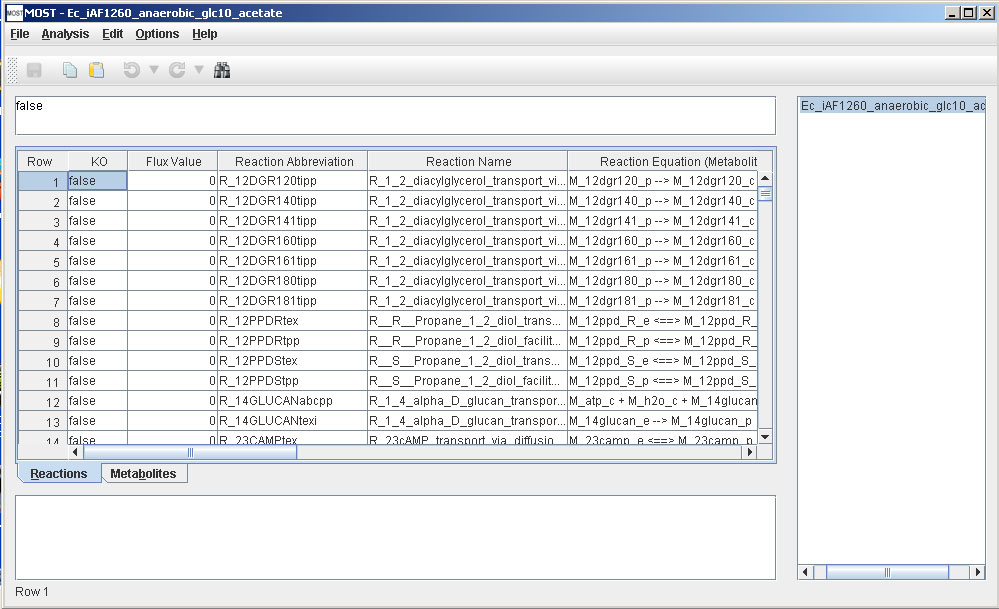
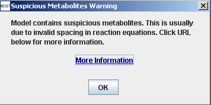

Help Topics
File Menu
- Load SBML
- Load CSV
- Load Excel Spreadsheets
- Load from Model Collection
- Saving Files
- Clear Tables
- Exit
File Menu
The MOST File Menu is used for loading and saving of files, as well as clearing the tables and exiting the application.
Note that if any changes have been made or Optimizations have been run previously to performing any load or Clear Tables actions, the “Save Changes” prompt will appear.
Select File –> Load SBML (Alt+F then Alt+L) then select a file with an “.xml” or “.sbml” extension that is a valid SBML file. If the file is not valid, a message will appear.
The Progress Bar will appear.

When the file has completed loading, the Progress Bar will close.

MOST can load CSV files of reactions and CSV files of metabolites. If a reactions file is loaded and a reactant is encountered that is not present in the Metabolites table, MOST will prompt the user to add it. If a reaction file is loaded by itself, the file will generate the metabolites for the Metabolites table. One note: if a reactions CSV file is loaded by itself, all the boundary conditions will be set to “false” by default for the generated Metabolites table.
Select File –> Load CSV (Alt+F then Alt+V)
The CSV File Load Interface will appear.

Click the Load Metabolites File button to select a metabolites CSV file and the Load Reactions File button to select a reactions CSV file.
If a metabolites file is selected, the Metabolite Column Selector Interface will appear above the main interface. If the columns selected for core columns are not correct, use the drop boxes to choose the correct column from the file for that column.
If a metabolites file was not selected, skip ahead to reactions CSV.
If a column is not present in the file, leave the field blank.
If the CSV file has a row before the row with the column names as the example below has “Required”, “Recommended” and “Optional” in the first row, click the “Next Row” button to get to the next row.

The Metabolite Column Selector should look similar to this after columns have been selected. Metabolites Abbreviation is a required field and hence cannot be blank.
Click “OK”
If a reactions file is selected, the Reaction Column Selector Interface will appear above the main interface. If the columns selected for core columns are not correct, use the drop boxes to choose the correct column from the file for that column. If a column is not present in the file, leave the field blank.
If the CSV file has a row before the row with the column names as the example below has “Required” , “Recommended” and “Optional” in the first row, click the “Next Row” button to get to the next row.
Reaction Abbreviation and Reaction Equation are required fields and hence cannot be blank.
Click “OK”
The file will now load. If there are any reactions that have metabolites/compounds that are not present in the Metabolites table, the Add Metabolite prompt will appear:

Click “Yes” to add the metabolite, “Yes to All” to suppress the prompt for the rest of the load, or “No” to not add the metabolite. If “No” is pressed, the metabolite will also be removed from the reaction.
After loading CSV files, if any reaction equations are spaced incorrectly, the following message will appear:

See Suspicious Metabolites for more details.
Models from Microsoft Excel spreadsheets can be loaded by MOST if the Metabolites and Reactions tables are saved in CSV (Comma delimited) format.
MOST has a Model Collection Database - a collection of published models that can be loaded using this menu item.
Select File –> Load from Model Collection Database (Alt+F then Alt+D)
The Model Collection table will appear.
Select a row on this table that corresponds to the desired model, then click “OK”.

Model Seed has a large collection of models in SBML format that have been tested to load on MOST.
MOST can save files in SBML and CSV file formats. SBML requires that Reaction Abbreviation and Metabolite Abbreviation (Reaction Id and Metabolite Id in SBML files) only contain alphanumeric characters (A-Z, a-z, 0-9) and underscores (_), so when any other character is found in these columns, the character will be replaced with an underscore. Also to conform with the format of many SBML files, if a Reaction Abbreviation does not start with “R_” (or “r_”) or a Metabolite Abbreviation does not start with “M_”, “S_” (or “m_”, “s_”), the appropriate prefix will be added to the abbreviation. The remaining fields cannot contain an ampersand (&). Also, non- ASCII characters are not permitted, and will be replaced with an underscore (_).
Save as CSV does not have these requirements and it will save the file as it appears.
Since save will overwrite the loaded file, it is advisable to make a copy of the file using Save As, and then use the copy for editing.If a model is loaded from the Model Collection, Save will be grayed out to prevent corrupting the model.
Select File –> Save (Alt+F then Alt+S or Ctrl+S). Save will automatically save as SBML if the loaded file is an SBML file or save as CSV if the loaded files are CSV files.
If no files have been loaded or only a CSV Reactions file or CSV Metabolites file has been loaded, the "Save As CSV" dialog will be displayed since no path exists for saving the other file. The default save file format is CSV since saving SBML may require modifying the Reaction Abbreviation cells or Metabolite Abbreviation cells if they are blank or not valid SBML format.

Select File –> Save As SBML (Alt+F then Alt+B), and enter the name to use to save the file. The file will be saved with an “.xml” extension. There is also a Save button in the toolbar. If the loaded file is from the Model Collection, the Save menu item and Save button will be grayed out. In order enable the Save menu item and Save button, use Save As SBML to save a copy to another directory such as My Documents.
If an extension is not typed into the file chooser, it will automatically be added.
Select File –> Save As CSV (Alt+F then Alt+A).
The Save As CSV dialog will appear.
Click "Save Metabolites File" or "Save Reactions File" buttons, to save the files. Each button will launch a file browser. The files will be saved with a “.csv” extension.
It is recommended that the file names for CSV files consist of the model name followed by a suffix such as “_reactions” or “_rxn” and “_metabolites” or “_mtb”.
If an extension is not typed into the file chooser, it will automatically be added.
Note: To save an optimization result, select the optimization in the tree, then click Save As SBML or Save As CSV to save the optimization in the desired format. See Analysis Menu for more on optimizations.
Select File –> Clear Tables (Alt+F then Alt+C).
This function will clear both tables. Each blank table has 2000 rows.
Select File –> Exit (Alt+F then Alt+X) or click the “X” (frame close button) on top right corner. A prompt will be displayed if there are any changes or optimizations to save.